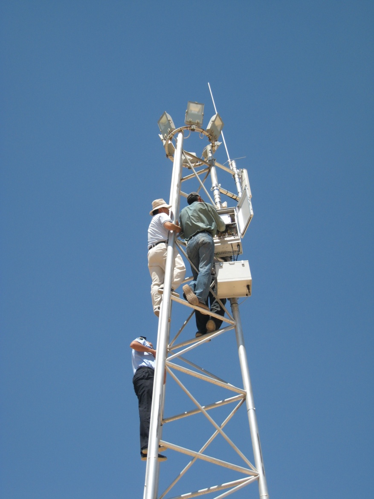
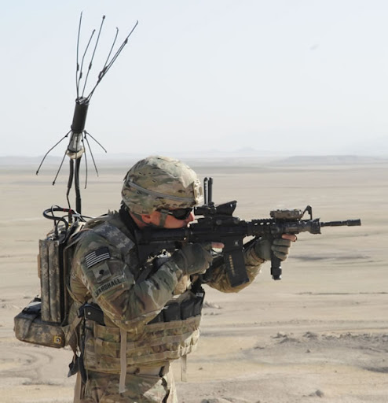

01
C-UAS · MOBILE
AEGIS
C-UAS System
Vehicle-mounted counter-drone suite.
Detect, Track, Defeat on the move.
AEGIS-integrated solutions for ground-level drone and RCIED threats.
Four platforms. One AEGIS intelligence layer.
Vehicle-mounted counter-drone suite.
Detect, Track, Defeat on the move.

The world's first liquid-cooled vehicle RCIED jammer.
Silent, Heatless, Unlimited.

Fixed-site protection for bases and critical infrastructure.
24/7, autonomous.

Man-portable RF protection for dismounted teams.
Instant-on, hot-swap battery.
The intelligence behind every LAND POWER platform.
AEGIS senses, decides, and commands.
Autonomously, at the edge, without cloud dependency.